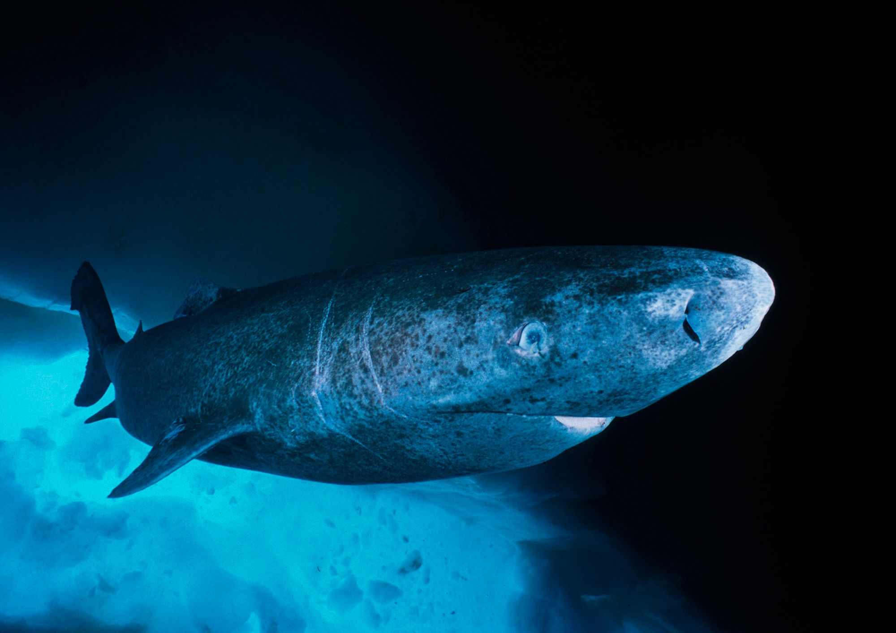

Quick Facts
- First discovered:
- Habitat: Can be found in depths as low as nearly 4000ft in waters with temperatures between 34-68°F
- Conservation Status: NEAR THREATENED
- Size: Typically 8-14ft, but can reach 24ft
- Danger to Humans: Nearly none, only one reported attack
Overview
 The Greenland shark is certainly very unique, even more so than the thresher shark. Aside from being called the Greenland shark, they are also known as the grey shark and gurry shark. They typically eat smaller sharks, fish, eels, etc., and will also scavenge for food.
They move very slowly and expend as little energy as possible. Thanks to their slow metabolism, they don't require a lot of calories to stay alive, which is why they are very slow. They are so slow, in fact, that many unathletic people can outswim them.
There are more interesting things about their biology. These sharks are actually blind due to a parasite in their eye. This isn't a problem for them, though, because they like to live deep underwater, where sight is not necessary for hunting prey.
These sharks are actually eaten by humans, despite how toxic their meat is. To get rid of the toxins in the flesh, people will boil the meat, dry it, or ferment it for many months. Despite it being considered a delicacy for some cultures, the meat (called Hakarl) is considered horrible in taste, and is described as the worst meat ever by chefs worldwide, especially with its awful smell.
Probably the thing that the shark is most famous for is its lifespan. These sharks can live as long as 500 years! That's twice the age of the United States, and one shark living today could have been alive when Shakespeare was writing his plays!
Like the thresher shark, Greenland sharks are ovoviviparous, meaning they give birth to live young as opposed to laying eggs. Another thing that really makes these sharks unique is that the mother will stay pregnant for 18 years old and can give birth to a lot of pups. Once the pups are born, they will wander off on their own, remaining solitary just like their adult counterparts do.